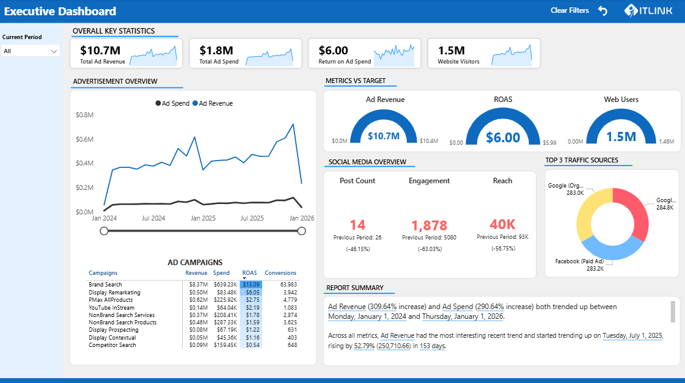
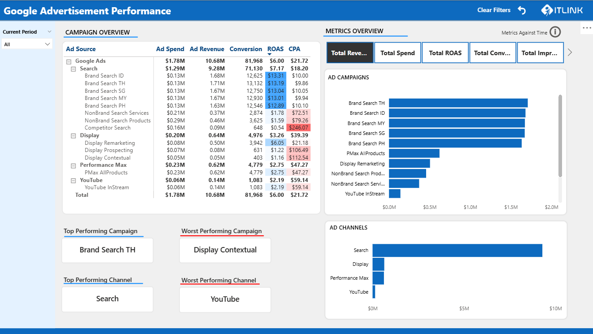
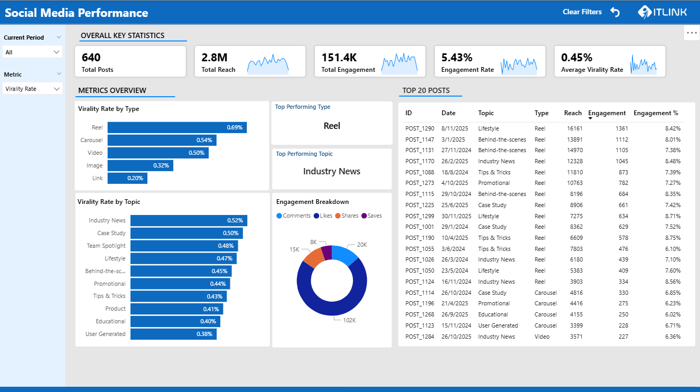
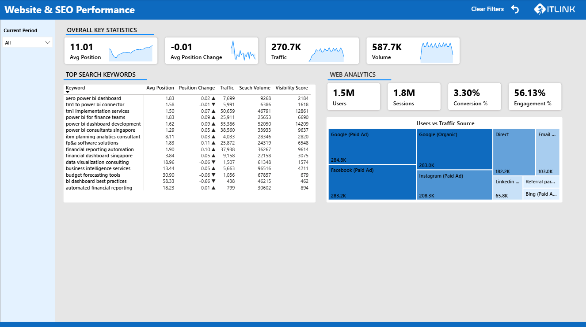

Power BI Marketing Dashboard Samples
Dashboard creation using AI-generated marketing data. This page showcases four fully-interactive dashboard views: executive KPIs, paid ads, organic performance, and SEO/website performance.



